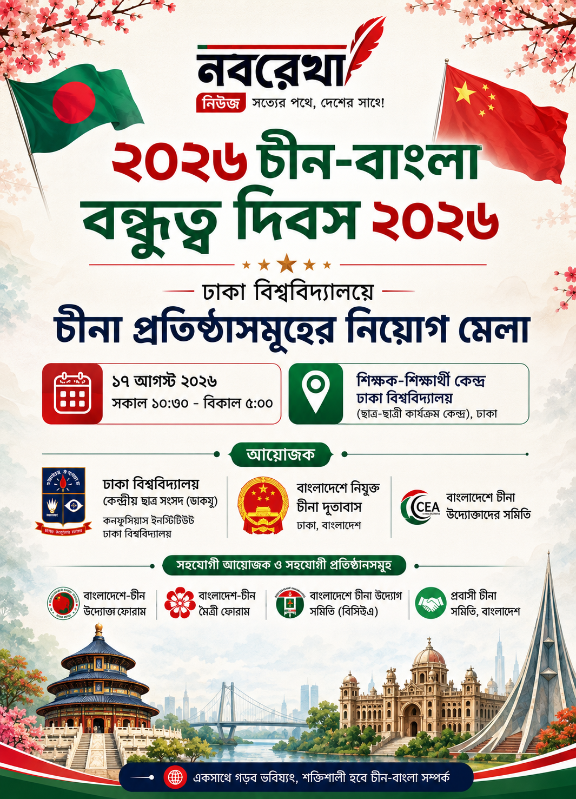

ঢাকা বিশ্ববিদ্যালয় কেন্দ্রীয় ছাত্র সংসদ (ডাকসু) ভিপি আবু সাদিক কায়েম তাঁর ভেরিফায়েড ফেসবুক পেজে জানিয়েছেন, ডাকসুর উদ্যোগে চীনা দূতাবাস ও কনফুসিয়াস ইনস্টিটিউটের সহযোগিতায় আয়োজিত হতে যাচ্ছে Sino-Bangla Day 2026।
আয়োজনে থাকছে জব ফেয়ার ও সাংস্কৃতিক অনুষ্ঠান। জব ফেয়ারে চীনের প্রায় ৪০টি কোম্পানি অংশগ্রহণ করবে বলে জানিয়েছেন তিনি।
তিনি আরও জানিয়েছেন, অনুষ্ঠানটি নিয়ে বিস্তারিত তথ্য সামনে জানানো হবে।
সূত্র: ডাকসু ভিপি আবু সাদিক কায়েমের ভেরিফায়েড ফেসবুক পেজ